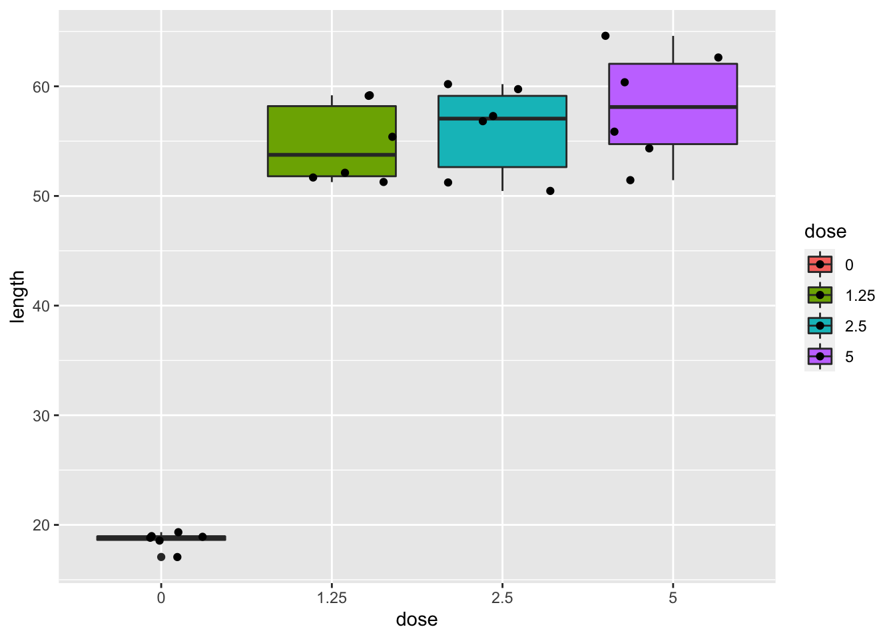

9. Non-parametric statistics - Kruskal Wallis
Lieven Clement
statOmics, Ghent University (https://statomics.github.io)

1 Comparison of \(g\) groups
- Extend \(F\)-test from a one-way ANOVA to non-parametric alternatives.
2 DMH Voorbeeld
Assess genotoxicity of 1,2-dimethylhydrazine dihydrochloride (DMH) (EU directive)
- 24 rats
- four groups with daily DMH dose
- control
- low
- medium
- high
- Genotoxicity in liver using comet assay on 150 liver cells per rat.
- Are there differences in DNA damage due to DMH dose?
2.1 Comet Assay:
- Visualise DNA strand breaks
- Length comet tail is a proxy for strand breaks.

Comet assay
dna <- read_delim("https://raw.githubusercontent.com/GTPB/PSLS20/master/data/dna.txt",delim=" ")
dna$dose <- as.factor(dna$dose)
dnadna %>%
ggplot(aes(x=dose,y=length,fill=dose))+
geom_boxplot() +
geom_point(position="jitter")
dna %>%
ggplot(aes(sample=length)) +
geom_qq() +
geom_qq_line() +
facet_wrap(~dose)
- Strong indication that data in control group has a lower variance.
- 6 observations per group are too few to check the assumptions
plot(lm(length~dose,data=dna))


3 Kruskal-Wallis Rank Test
The Kruskal-Wallis Rank Test (KW-test) is a non-parameteric alternative for ANOVA F-test.
Classical \(F\)-teststatistic can be written as \[ F = \frac{\text{SST}/(g-1)}{\text{SSE}/(n-g)} = \frac{\text{SST}/(g-1)}{(\text{SSTot}-\text{SST})/(n-g)} , \]
with \(g\) the number of groups.
SSTot depends only on outcomes \(\mathbf{y}\) and will not vary in permutation test.
SST can be used as statistic \[\text{SST}=\sum_{j=1}^t n_j(\bar{Y}_j-\bar{Y})^2\]
The KW test statistic is based on SST on rank-transformed outcomes1, \[ \text{SST} = \sum_{j=1}^g n_j \left(\bar{R}_j - \bar{R}\right)^2 = \sum_{j=1}^t n_j \left(\bar{R}_j - \frac{n+1}{2}\right)^2 , \]
with \(\bar{R}_j\) the mean of the ranks in group \(j\), and \(\bar{R}\) the mean of all ranks, \[ \bar{R} = \frac{1}{n}(1+2+\cdots + n) = \frac{1}{n}\frac{1}{2}n(n+1) = \frac{n+1}{2}. \]
The KW teststatistic is given by \[ KW = \frac{12}{n(n+1)} \sum_{j=1}^g n_j \left(\bar{R}_j - \frac{n+1}{2}\right)^2. \]
The factor \(\frac{12}{n(n+1)}\) is used so that \(KW\) has a simple asymptotic null distribution. In particular under \(H_0\), given thart \(\min(n_1,\ldots, n_g)\rightarrow \infty\), \[ KW \rightarrow \chi^2_{t-1}. \]
The exact KW-test can be executed by calculating the permutation null distribution (that only depends on \(n_1, \ldots, n_g\)) to test \[H_0: f_1=\ldots=f_g \text{ vs } H_1: \text{ at least two means are different}.\]
In order to allow \(H_1\) to be formulated in terms of means, the assumption of locations shift should be valid.
For DMH example this is not the case.
If location-shift is invalid, we have to formulate \(H_1\) in terms of probabilistic indices: \[H_0: f_1=\ldots=f_g \text{ vs } H_1: \exists\ j,k \in \{1,\ldots,g\} : \text{P}\left[Y_j\geq Y_k\right]\neq 0.5\]
3.1 DNA Damage Example
kruskal.test(length~dose,data=dna)
Kruskal-Wallis rank sum test
data: length by dose
Kruskal-Wallis chi-squared = 14, df = 3, p-value = 0.002905On the \(5\%\) level of significance we can reject the null hypothesis.
R-functie
kruskal.testonly returns the asymptotic approximation for \(p\)-values.With only 6 observaties per groep, this is not a good approximation of the \(p\)-value
With the
coinR package we can calculate the exacte \(p\)-value
library(coin)
kwPerm <- kruskal_test(length~dose,data=dna,
distribution=approximate(B=100000))
kwPerm
Approximative Kruskal-Wallis Test
data: length by dose (0, 1.25, 2.5, 5)
chi-squared = 14, p-value = 0.00043We conclude that the difference in the distribution of the DNA damages due to the DMH dose is extremely significantly different.
Posthoc analysis with WMW tests.
pairwise.wilcox.test(dna$length,dna$dose)
Pairwise comparisons using Wilcoxon rank sum exact test
data: dna$length and dna$dose
0 1.25 2.5
1.25 0.013 - -
2.5 0.013 0.818 -
5 0.013 0.721 0.788
P value adjustment method: holm - All DMH behandelingen are significantly different from the control.
- The DMH are not significantly different from one another.
- U1 does not occur in the
pairwise.wilcox.testoutput. Point estimate on probability on higher DNA-damage?
nGroup <- table(dna$dose)
probInd <- combn(levels(dna$dose),2,function(x)
{
test <- wilcox.test(length~dose,subset(dna,dose%in%x))
return(test$statistic/prod(nGroup[x]))
}
)
names(probInd) <- combn(levels(dna$dose),2,paste,collapse="vs")
probInd 0vs1.25 0vs2.5 0vs5 1.25vs2.5 1.25vs5 2.5vs5
0.0000000 0.0000000 0.0000000 0.4444444 0.2777778 0.3333333 Because there are doubts on the location-shift model we draw our conclusions in terms of the probabilistic index.
3.1.1 Conclusion
- There is an extremely significant difference in in the distribution of the DNA-damage measurements due to the treatment with DMH (\(p<0.001\) KW-test).
- DNA-damage is more likely upon DMH treatment than in the control treatment (all p=0.013, WMW-testen).
- The probability on higher DNA-damage upon exposure to DMH is 100% (Calculation of a CI on the probabilistic index is beyond the scope of the course)
- There are no significant differences in the distributions of the comit-lengths among the treatment with the different DMH concentrations (\(p=\) 0.72-0.82).
- DMH shows already genotoxic effects at low dose.
- (Alle paarswise tests are gecorrected for multiple testing using Holm’s methode).
we assume that no ties are available↩︎